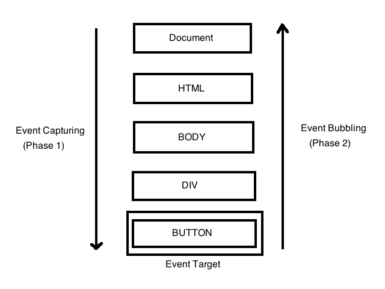

DOM (Document Object Model) е API, който представя и взаимодейства с всеки HTML или XML документ като с дърво, където всеки възел е част от документа (например елемент, текстов низ или коментар).
Той е широко използван в мрежата, тъй като веднъж зареден,моделът позволява на скрипта да взаимодейства с целия документ. Така възлите могат да се : създават, преместват, променят, и да им се добавят Event listener-и които се задействат при появата на дадено събитие.
Тази страница ще ви научи как да правите всичко това.
DOM възли
Според стандарта W3C HTML DOM всичко в HTML документа е възел:
Целият документ е възел document
Всеки HTML елемент e възел element
Текстът вътре в HTML елемент e text възел
Всеки HTML атрибут е attribute възел
Всички коментари са възли за коментари
Възлите имат йерархична връзка помежду си.
Техният корен е обекта document и от него можем да достъпим цялото съдържание.
 [1]
[1]
Намиране на HTML елементи
var x=document.getElementById( “id”); - връща обект, съответстващ на HTML елемента с търсеното id , или null, ако такъв обект не съществува
Останалите методи (без последния) връщат HTMLCollection – списък от HTML елементи.
var collection = document.getElementsByTagName("p"); - елементите със съответния таг.
Поотделно ги достъпваме с
for (i = 0; i <=(collection.length-1); i++){
collection[i].style.backgroundColor = "red"; }
или
document.getElementsByTagName("P") .namedItem("myElement"); - взима само елемента със съответните id и таг
document.getElementsByClassName("example"); - взима по класа
document.querySelectorAll("p.example"); - взима всички елементи, отговарящи на дадения CSS селектор, тук paragraph от клас example
Чрез HTMLCollection обаче не можем да променим структурата на дървото. За тази цел ползваме методите от Create & Remove.
[1],[8]
Обхождане на DOM дървото
Можем да обхождаме дървото и чрез вече открити обекти, на база “роднински връзки“
Нека var x=document.getElementById( “id”);
var xp = x.parentNode; - връща родителя на елемента
var xc = x.childNodes; - връща списък от децата на елемента, в реда им от html кода
querySelectorAll и childNodes връщат NodeList, различаващ се от HTMLCollection по това, че може да съдържа attribute и text възли, но достъпът до елементите му е само по индекс.
Освен това важно е да забележа,че промени в DOM дървото ще променят какво връща childNodes но не и querySelectorAll
[1],[2],[8]
Работа с HTML през DOM
Промяна на съдържанието на елемент
Нека имаме параграф с id="test" и съдържание
This element contains <span> an inner span </span>.
и ползваме
var e=document.getElementById(“test”);
e. innerHTML - ще ни върне точното HTML съдържание :
"This element contains <span> an inner span </span>."
и може да променим това съдържание с
e.innerHTML = "New contents!";
Ако се интересуваме само от текста вътре в елемента, без таговете
e.innerText - ще върне
"This element contains an inner span."
[1],[2]
Промяна на DOM свойство
Някои свойства на DOM обекта съответстват на атрибутите в HTML, като тези атрибути инициализират свойствата при зареждане на дървото.
e.property - ни дава достъп до свойство property,
като възможните свойства за елемента и типа им може да намерим чрез devtools конзолата
Така например взимаме стойността на падащ списък с id=”select1”
document.getElementById(”select1”).value;
и променяме изображението в даден img
document.getElementById("myImage").src = "landscape.jpg";
[1],[8]
Промяна на атрибутите
Самият атрибут взимаме чрез съответният му attribute възел с
var attr= element.getAttributeNode(attributeName);
attr.name - ни дава името
attr.value - ни дава стойността
Тези възли също се инициализират при зареждане на дървото.
Може да вземем и всички атрибути на елемента с
var attribures = element.attributes
и обхождаме възлите с
for (i = 0; i < attributes.length; i++) { attributes[i]}
Стойността на атрибут винаги е String, и промяна в нея веднага ще засегне съответното му свойство
[1],[8]
Други функции за работа с атрибути
element.getAttribute(attributeName) - връща стойността му ,или null ако такъв атрибут няма
element.hasAttribute(attributeName) - връща true, ако атрибута съществува
element.setAttribute(attributeName, attributeValue)- променя стойността на атрибута, ако такъв съществува, в противен случай добавя атрибута със съответната стойност
element.removeAttribute(attributeName) - премахва атрибута за елемента
[2]
Промяна на стила на елемента
Element.style свойството връща обект CSSStyleDeclaration - списък на всички стилове за този елемент, със стойности взети от inline декларираният атрибут style.
Това свойство обаче не ни дава информация за правилата за стила разположени във външен файл или в секцията head.
Ползваме го с
Element.style.property = value; - за да променим съответния стил , без да засягаме останалите.
Промените тук имат най-висок приоритет (inline).
Например Element.style.color = "blue";
Важно е да забележим, че свойствата на style могат да се различават по име (но не и по стойност)от свойствата в CSS
Може да ги сравните на линковете DOM Style и CSS, но разликите са главно в свойства с по няколко думи: липсата на тирета и първа главна букви за думите след първата
[1],[4],[8]
Някои основни свойства:
| В DOM : |
В CSS : |
| color |
color |
| textDecoration |
text-decoration |
| textAlign |
text-align |
| font |
font |
| background |
background |
| backgroundImage |
background-image |
| display |
display |
| margin |
margin |
| marginLeft |
margin-left |
| border |
border |
| borderTop |
border-top |
| padding |
padding |
| paddingRight |
padding-right |
| position |
position |
| right |
right |
| top |
top |
Нека приложим досега наученото,като добавим проста анимация към страницата, при натискане на бутон
Създаване и изтриване на HTML елементи
Както отбелязахме по-горе , обектът document ни дава достъп до цялото DOM дърво, като чрез него може дори да променяме структурата
Базов пример за това е write() метода
Ако в скриптов елемент имаме кода
document.write("<h1>Hello World</h1>"); - чрез него пишем директно в изходния поток на HTML, от позицията в която е скрипта.
Ползваме този метод главно при тестване на страницата.
Ще изчистим цялото останало съдържание на страницата, ако извикаме document.write() след като тя вече е заредена
var a=document.createElement(“nodename”) - създава възел element от искания тип
Позиционираме този възел чрез :
parent.appendChild(a); - добавяме го като последно дете на дадения възел
parent.insertBefore(a, existingNode); - като дете на node, разположено точно преди детето му existingNode(ако е null, метода е еквивалентен на appendChild )
parent.replaceChild(a, oldNode); - изтриваме детето oldNode и на негово място идва новият ни възел
А ако искаме само да премахне даден възел b, извикваме от родителя му
parent.removeChild(b);
Последните два метода връщат възел – изтрития елемент,
или null , ако възелът който сме искали да изтрием не съществува.
Така имаме опцията да вмъкнем изтритите елементи на друго място в дървото.
[1],[8]
Нека допълним предишният пример , като добавим причина котето да се движи.
Събития
Събития в HTML и DOM
Ако потребителят натисне бутон на уеб страница, може да искаме да отговорим на това действие чрез функция func1().
Задаваме това да се случи чрез
<button id="b1" onclick="func1">Press me </button>
Атрибутът onclick е event handler/listener. Браузърът получава събития от операционната система всеки път, когато нещо се случи. За това събитие се намира на кои event handlers отговаря (fires), след което всеки от тях изпълнява зададената му функция- callback .
Същото можем да направим много по-добре чрез DOM по два начина:
- чрез свойства съдържащи event handler код
document.getElementById("b1").onclick = func1;
- чрез метод приемащ като параметър име на събитието и обработващият го callback
document.getElementById("b1"). addEventListener("click", func1);
Така пазим пазим JavaScript кода отделно от HTML
Ако искаме да премахнем някоя callback-функция за даден event listener , ползваме
document.getElementById("b1"). removeEventListener('click',funcName);
Предимсвото на DOM
Важно е да отбележим, че addEventListener ни позволява да регистрираме няколко callback-а за един и същ слушател.
При
myElement.onclick = functionA;
myElement.onclick = functionB;
ще се изпълни само functionB,
докато при
myElement.addEventListener('click', functionA);
myElement.addEventListener('click', functionB);
при 'click' ще се извършат и двете функции
Често използвани събития
Нека дадем имената на някои от по-често използваните събития, като съонвентите им event handlers се получават като отпред им добавим представката "on".
| click |
когато се кликне върху елемент |
| mouseover |
когато мишката се премести върху елемент |
| mouseout |
когато мишката се премести от елемент |
| submit |
когато submit-нем form |
| keydown |
когато се натисне клавиш |
| change |
когато стойността на елемент е променена |
| load |
когато обектът е зареден |
Анонимна функция и параметри
На event handler можеда подадем и анонимна функция:
myElement.onmouseover = function() {.….}
или
myElement.addEventListener('mouseover ', function() {.….});
За да ползваме функция с параметри като callback, използвме анонимна функция, която извиква исканата с определени параметри.
element.addEventListener("click", function(){ myFunction(p1, p2); });
Event обекта
Полезно е да имаме информация за самото събитие, което обработваме. Тези данни се пазят в Event обекта, като той автоматично се подава на всеки event handler.
Ползваме го по следния начин:
function colChange(e) { e.target.style.color = “red”; }
myElement.onclick= colChange; - сменяме цвета на текста само на кликнатият елемент
Тук „e“ е Event обекта, и e.target е елемента, върху който е кликнато.
Често използвани свойства/методи при работа с Event са:
event.target - Връща елемента,задействал събитието
event.currentTarget - Връща елемента, чиито EventListener е задействал събитието
event.timeStamp - връща броя на милисекундите от зареждането на документа, до създаването на конкретното събитие
event.preventDefault() - действието по подразбиране, принадлежащо на събитието, няма да се случи, стига събитието да има свойство „cancelable“.
Например при кликане на "Submit" да не позволим да изпращане на form
или да не проследим URL адреса при кликане на връзка.
[1],[3],[5]
Вече спокойно межем да работим с event listeners в примерната програма.
Ще добавим слушател, сменящ съдържанието на страницата при много кликане на бутона "Come here"
и опция да изключим този слушател при натискане на втория бутон.
Event propagation
Когато събитие се задейства върху елемент с родител ,съвременните браузъри могат да изпълняват две различни фази – capturing фаза и bubbling фаза, в зависимост каква фаза е подадена на event handler на детето.
Те определя в какъв ред елементите получават събитието.
Capturing

Браузърът проверява дали най-външният прародител на елемента има регистриран event handler за съответното събитие,и ако да, го изпълнява.
След това преминава към децата му и прави същото,докато стигне до елемента, върху който всъщност е извършено събитието.
Bubbling
Браузърът проверява дали елементът, върху който е събитието има нужният event handler и ако да, го изпълнява.
След това преминава към непосредственият му предшественик и прави същото, докато стигне до <html> елемента.
Употреба
Коя от двете фази ще ползваме определяме чрез третия параметър на
addEventListener(event, function, useCapture);
По подразбиране е bubbling – ако няма подаден трети параметър
capturing ще имаме при
addEventListener(event, function, true);
но тази фаза рядко се използва
Ако ни се наложи да спрем разпространяването на събитието, може да направи това чрез метод на Event обекта
event.stopPropagation();
в някоя callback-функция .
[1],[6]
Event delegation
Идеята е, че ако имаме много елементи,които обработваме по подобен начин, вместо да присвояваме handler на всеки от тях – може да поставим един единствен handler върху техният общ родител.
Така точният елемент може да обработим чрез event.target, но в този случай трябва да внимаваме при използване на stopPropagation(); за да не се получат „мъртви участъци“.
[7]
С последният пример ще демонстрираме точно това
Като заключение :
DOM ни позволява да боравим с елементи на страницата и тяхното съдържание чрез JavaScript и се
надявам тази страница да ви дава добра основа за бъдеща работа с него.
Ако проявявате интерес , допълнителни свойства и методи може да намерите в използваните ...